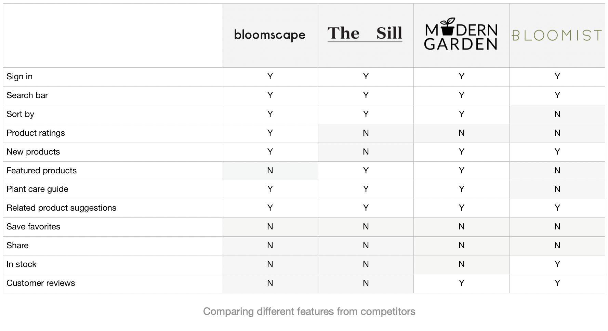

The
Dry Garden
WEB DESIGN & DEVELOPMENT
The Dry Garden is an online e-commerce shop that sells air plants. This responsive website is coded with HTML, CSS, Javascript, PHP, MySQL and jQuery.
Introducation
This is a concept e-commerce website for a local air plant shop. It is developed with simple web services, which I consumed on the client-side by coding HTML and CSS from scratch. By implementing basic PHP scripts, I also made the website interactive.
Project Goal
The primary goal of the e-commerce website was to broaden the customer reach by allowing products to be purchased online for delivery. The website needed to reinforce The Dry Garden’s core business values: high quality, simplicity and creativity.
Research
Competitive Analysis
To gain inspiration for my e-commerce website, I began by identifying four main competitors, specifically websites that sell plants and gardening supplies.
User interviews
I interviewed people who are gardeners and do online shopping on a regular basis. This process helped me to understand what motivates the customers and to identify the following user needs:
1. Simple and appealing product pages
2. Clear product arrangement for a seamless shopping experience
3. Product search to easily find products
4. Detailed product information to ensure proper product selection
5. Efficient checkout process to save users time
6. Plant care guide to make plant-parenting easy
Iterations & Wireframes
Site Map
With the results of the interviews and inspiration from other competitor websites, I created a site map to define the overall structure of the website. This was to ensure that products would be placed where the users would expect to find them when visiting the website and to make the experience more intuitive.
Wireframe
I began to design wireframes using the site map as a guide. I made sure to prioritize the features that would best address the needs of the users throughout the website.
Final Design
This project helped me to understand the entire process of front-end design and development. From researching the markets and sketching wireframes, to building a website and designing the UI. I enjoyed learning about the technologies that make a website come alive.